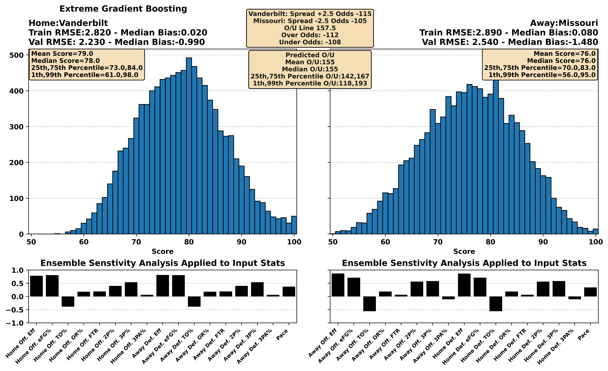
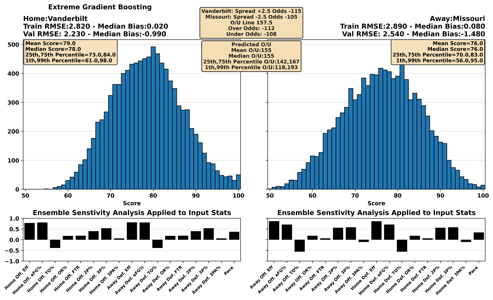

| BART Torvik Prediction | 11:00 AM 4 Florida at 7 Tennessee ESPN | Tennessee -2.0, 69-67 (58%) |


| BART Torvik Prediction | 03:00 PM 11 Kansas at 29 Baylor ESPN | Kansas -0.1, 71-70 (50%) |


| BART Torvik Prediction | 03:00 PM 27 BYU at 51 UCF ESPN+ | BYU -1.2, 81-80 (54%) |


| BART Torvik Prediction | 10:00 PM 16 Gonzaga at 25 Saint Mary's ESPN | Saint Mary's -2.4, 74-71 (59%) |


| BART Torvik Prediction | 01:00 PM 2 Auburn at 28 Mississippi ESPN | Auburn -7.2, 77-70 (75%) |


 

| BART Torvik Prediction | 12:00 PM 22 Missouri at 26 Mississippi St. SEC Network | Mississippi St. -3.7, 77-74 (64%) |


| BART Torvik Prediction | 03:30 PM 12 Michigan St. at 49 USC Peacock | Michigan St. -3.5, 76-73 (63%) |


| BART Torvik Prediction | 12:00 PM 31 Creighton at 52 Villanova FOX | Villanova -0.9, 74-73 (54%) |


| BART Torvik Prediction | 05:00 PM 32 Texas at 71 LSU SEC Network | Texas -1.2, 72-70 (55%) |


| BART Torvik Prediction | 02:30 PM 38 Vanderbilt at 47 Oklahoma SEC Network | Oklahoma -2.8, 80-77 (60%) |


| BART Torvik Prediction | 12:00 PM 10 Arizona at 57 Arizona St. CBS | Arizona -4.6, 75-71 (68%) |


| BART Torvik Prediction | 05:00 PM 13 Texas Tech at 1 Houston ESPN2 | Houston -12.1, 69-56 (90%) |


| BART Torvik Prediction | 07:00 PM 37 Connecticut at 23 Marquette FOX | Marquette -7.0, 76-69 (75%) |


| BART Torvik Prediction | 05:30 PM 44 North Carolina at 3 Duke ESPN | Duke -15.6, 81-66 (92%) |


| BART Torvik Prediction | 08:00 PM 65 Arkansas at 17 Kentucky ESPN | Kentucky -12.6, 86-74 (86%) |


| BART Torvik Prediction | 01:00 PM 72 Kansas St. at 6 Iowa St. ESPN2 | Iowa St. -15.6, 82-66 (92%) |